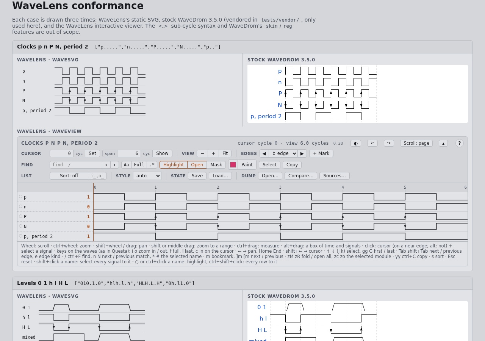
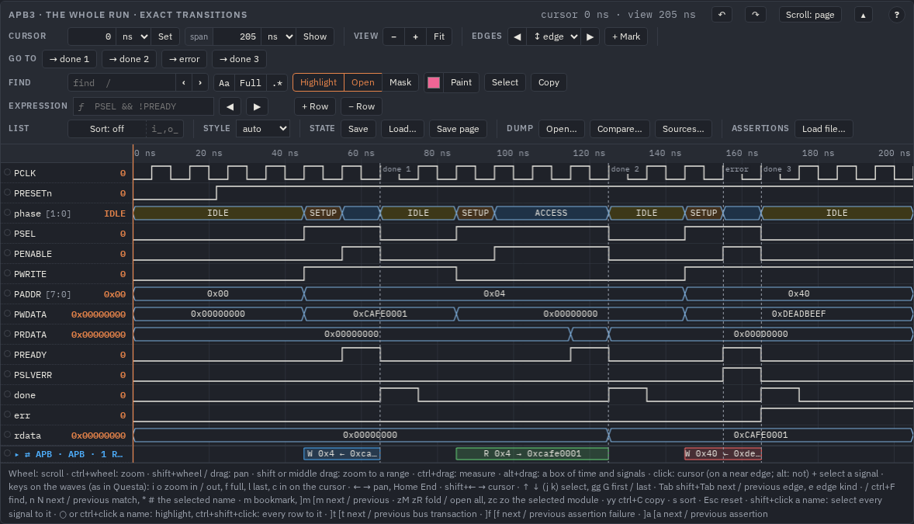
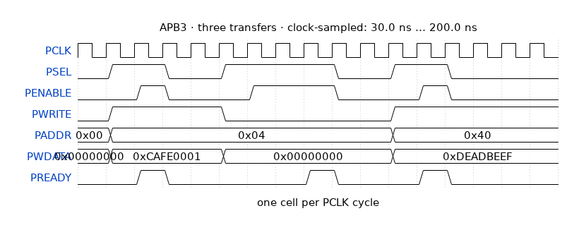

WaveDrom: diagrams in your own pages
WaveLens reads WaveDrom JSON (the format of the
WaveDrom timing-diagram editor) and draws it two ways from one model: an interactive viewer (zoom, cursor, find, bookmarks)
and a static WaveDrom-style SVG for documents. This guide shows how to put both in a page of your own, what of WaveDrom is
supported, what WaveLens adds to the format, and how WaveJSON comes out of a simulator dump or out of the viewer. The diagrams
below are live: this page loads wavelens/wavelens.js itself.
Two renderers, one model
A diagram is a WaveJSON object ({"signal": […]}). WaveLens parses it once and hands the model to one of two
renderers:
| Renderer | Markup | Use it for |
|---|---|---|
Viewer (WaveView) | <script type="application/wavedrom">, data-mode="view" |
reading waves: zoom and pan, a cursor and a second cursor, edge and value search, fuzzy find, highlight, bookmarks and arrows, the right button's menu (picture, WaveDrom). Drawn on a canvas, any number of rows. |
Static SVG (WaveSVG) | <script type="WaveDrom">, data-mode="svg" |
documents, specifications, slides and print: a WaveDrom-looking inline SVG with the same bookmarks and arrows and a legend of the bookmark texts. Text in the SVG stays selectable; the figure follows the page theme. |
Both read the same keys and the same settings, so a diagram you tuned in the viewer looks the same as a figure. What the viewer draws, the static SVG draws too where it makes sense (bookmarks, arrows, groups, assertions, bus transactions, gaps).
Your first page
- Copy the folder
wavelens/of the repository next to your page (or point at it where it is). No build step, no other dependency; the page works fromfile://. The two files below are the viewer and the static SVG; the rest of the folder are plugins you add when you want them (next step). - Link both in the page and write a diagram in a script block:
<link rel="stylesheet" href="wavelens/wavelens.css"> <script src="wavelens/wavelens.js"></script> <script type="application/wavedrom"> <!-- interactive viewer --> { "signal": [ { "name": "clk", "wave": "p....." }, { "name": "d", "wave": "x.34.x", "data": ["A", "B"] } ] } </script> <script type="WaveDrom"> {signal: [{name: 'req', wave: '01..0'}]} </script> <!-- static SVG --> - Open it. When the page loads, every
script[type="application/wavedrom"],script[type="WaveDrom"]and element withdata-waveis upgraded: a script block gets a<div>right after it with the viewer or the SVG in it. - For assertions, expressions and bus transactions, add the plugins after
wavelens.js, aswavelens/viewer.htmldoes (a page ofmake htmlhas them inlined;mkhtml.py --no-svaleaves the assertions out):<script src="wavelens/wavelens.config.js"></script> <!-- optional: your global settings, before wavelens.js --> <script src="wavelens/wavelens.js"></script> <script src="wavelens/sva.wasm.js"></script> <!-- the assertion engine (~400 kB) … --> <script src="wavelens/sva.js"></script> <!-- … and its panel, the ƒ expressions --> <script src="wavelens/bus.js"></script> <!-- bus transactions -->
The same two blocks, live:
The body of a script block is JSON or the WaveDrom editor's relaxed syntax (unquoted keys, single quotes,
trailing commas). Like stock WaveDrom, the relaxed form is evaluated as JavaScript: put only diagrams you trust in a page. An element's
data-wave names its data instead: "#id" (the JSON of the element with that id) or a global
("DEMO_WAVES.exact": an object a script of yours defined, e.g. a .js file of embed.py loaded
with <script src>, which runs as any script does).
Turn the automatic upgrade off with <script src="wavelens.js" data-manual> and call
WaveLens.upgrade(root) yourself (for content you add later).
Attributes: window, mode, settings
Every upgraded element takes data-* attributes. Times are model units as plain numbers (cycles without the
time extension, ps with it) or a time with a unit (120ns, 1.5us).
| Attribute | Effect |
|---|---|
data-mode="svg | view" | pick the renderer (default: view for application/wavedrom
and data-wave, svg for WaveDrom) |
data-from, data-to | viewer: the window it opens with; SVG: the window that is drawn |
data-cursor, data-title | the cursor at start; the title in the viewer's bar |
data-width, data-fit | SVG width in px; scale the SVG to its container |
data-theme, data-colors | the theme (light white dark) and palette of this wave only |
data-sort, data-sort-ignore, data-highlight | starting order, prefixes skipped
when sorting (i_,o_), instances highlighted at start |
data-config='{"rowHeight": 30}' | any setting, for this wave only |
data-lazy | built on a click of Load waveform, or when the enclosing
<details> opens: for pages with many diagrams |
data-wave="#id" / data-wave="VAR.key" | the model from another script element, or from a global
loaded with <script src> |
One source, drawn twice: a JSON block referred to by id, as a viewer with a narrower window and as a figure with its own row height.
Data files and lazy diagrams
A page opened from file:// cannot fetch() a JSON file next to it. Put the WaveJSON into a data script
with tools/embed.py, load it, and refer to a model by VAR.key:
python3 -I tools/embed.py --var MY_WAVES cyc=cyc.json exact=exact.json --out data.js
<script src="data.js"></script> <!-- window.MY_WAVES = {"cyc": {…}, "exact": {…}} -->
<div data-wave="MY_WAVES.exact" data-lazy></div>embed.py --html page.html --placeholder '/*WAVE_DATA*/' a.json --out out.html puts the JSON into a placeholder
instead (the flow of docs/reference/template.html). With many diagrams in one page, data-lazy inside a
<details> builds each one only when its card is opened:
A lazy card: open it to build the viewer
The supported WaveDrom
WaveLens draws the WaveDrom format most diagrams use. tests/conformance.html draws every case three times — WaveLens's
static SVG, stock WaveDrom 3.5.0 (vendored in tests/vendor/, only used there) and the WaveLens viewer — so a difference
shows at a glance.

p n P N with a period of 2, then levels.| Feature | Notes |
|---|---|
0 1 | levels with soft (slanted) edges |
h l / H L | levels with sharp edges / plus an edge arrow |
p n / P N | clocks (rising / falling at the cell start) / plus an arrow |
x | hatched, drawn in --wave-x (stock WaveDrom uses black) |
z | a mid-level line in --wave-z |
u d | pull-up / pull-down, dashed |
= 2–9 | bus segments with data labels (an array or a space-separated string);
3–9 take the fill tokens --wave-c3…c9 |
. | | extend; extend with a gap mark |
period, phase | per signal; a positive phase is clipped at cycle 0 as in stock |
node, edge | shapes - ~ -~ ~- -| |- -|-, arrows < >,
+; labels; lowercase nodes are labelled |
groups ["name", …], {} | nested groups are header rows (foldable in the viewer, bracketed in the
SVG) rather than stock's rotated labels; {} is a spacer |
head.text/tick/every, foot.text/tock, config.hscale |
Not supported: <…> sub-cycles, reg diagrams, skins, JsonML styling inside texts (only the
text is used). An unknown wave character is taken as ..
What WaveLens adds to the format
Stock WaveDrom ignores these keys, so a file with them still draws there (without them). They are what lets a diagram come from a real dump: real time, exact transitions, value labels, notes.
| Key | Meaning |
|---|---|
time: {t0, cycle, t1?, skip?} | cycle c starts at t0 + c·cycle ps, so the axis shows
real time; skip: [[k, n]]: the | cell at index k stands for n cycles |
signal[i].tv: [[t, v], …] | exact transitions in model time (ps with time); 1-bit
0 1 x z; a bus hex (an x / z nibble all unknown), or 'b10x1 for single unknown
bits; a real a number, a string its text (kind); wins over wave (all of it:
USAGE.md § Extensions) |
width, enum, radix, style, color/stroke,
fill | a bus's width, value labels ({"0": "IDLE"}), radix, edge style, trace and fill colours |
enumColors, analog, fields, height, kind | fill by
value, a bus as a step plot, a packed struct as rows of fields, the row's height, real / string texts |
path, same | the full hierarchical path (the name's tooltip); "same": "tb.clk": the
tv of the signal with that path, stored once |
config: {…} | the settings of this diagram (theme, colours, sizes, sort, gaps …) |
bookmarks, arrows | numbered notes on signal rows and arrows between them |
markers, jumps, cursor | dashed markers, jump buttons, the initial cursor |
sva: {files?, bind, notes?, exprs?} | assertions bound to the diagram (Assertions) |
meta.scope | the instance the top rows belong to (for binding) |
meta.omitted | the dump's signals not in the page ("show": false in the config, or past dumpBudget), by scope: the find names them |
Real time and exact transitions
With time the axis is in ns, and tv puts each change at its own time instead of a cell boundary. Here the
clock is a wave string (10 ns cells), req rises at 23 ns, between two clock edges, and state is a 2-bit bus
labelled by enum; count is shown in decimal.
Bookmarks, arrows, markers, jumps
bookmarks are numbered notes on a row (t in model units or a time such as "25ns",
signal the row's path, group.name inside a group); arrows join two of them (shape
- ~ -~ ~- -| |- -|-, head > <> < or "", line solid dashed dotted, a
colour, a label). markers are dashed lines; up to six of them become go to buttons when there are
no jumps. The static SVG puts the bookmark texts in a legend under the figure.
You rarely type bookmarks by hand: put them on in the viewer (m, drag, shift+drag for an arrow) and press
JSON under the waves; it gives the "bookmarks" and "arrows" lists to paste
(Viewer).
Colours, styles and plots per signal
style draws the edges slanted (wavedrom), vertical with narrow bus crossings like a simulator
(questa) or square; auto slants wave strings and draws tv edges vertically.
color / stroke colour a trace and its name, fill a bus, enumColors fill by value
(a CSS colour, or a token c3…c9 that
follows the theme),
analog draws a bus as a step plot that many rows high.
Static SVG for documents
For a document, a slide or a printed specification use the static renderer: <script type="WaveDrom">,
data-mode="svg", a view with "render": "svg" in a page config (Dump → page),
or from a script:
const svg = WaveSVG.toString(model, { from: '30ns', to: '80ns', width: 900 }); // a string: write it to a file
WaveSVG.render(el, model, { fit: true }); // into an elementThe figure follows the page theme (or paints its own background when it has a theme or a bg colour), keeps the
bookmarks and arrows, and lists the bookmark texts as a legend. With assertions it draws each one's steps and the first failure on
its signals; with gaps in its settings it leaves out the idle stretches (Gaps).

"render": "svg" view of the APB example. The write from 30 to 80 ns with bookmarks 1–2 and the
setup → access arrow, the APB port found by its names (⇄ APB), two bound assertions with their attempts and
steps (svaShow), and under the figure the legends of the bookmarks, the bus and the assertion steps.A picture of what a viewer shows right now is the right button's Save image as SVG / PNG (Viewer): the same renderer with the viewer's folding, colours, cursor and highlight, the page's colours put in so the file opens anywhere.
WaveJSON from a simulator dump
tools/vcd2wavedrom.py turns a window of a VCD or FST into WaveJSON. It has two modes:
| Mode | Output | When |
|---|---|---|
--clock CLK | one WaveDrom cell per period of CLK, the value after its rising edge (what holds
during the cycle); plain wave strings and data, plus time: draws in stock WaveDrom too |
synchronous logic, a document, a short window |
--exact | every transition at its own time in tv, with a quantised wave string as
a fallback for stock WaveDrom | asynchronous signals, several clocks, glitches, a long window in the viewer |
python3 -I tools/vcd2wavedrom.py --waves out/examples/apb/apb.vcd --scope apb_tb --clock PCLK \
--from 30ns --to 110ns --signals PCLK,PSEL,PENABLE,PADDR=addr --out cyc.json{
"signal": [
{"name": "PCLK", "wave": "p......."},
{"name": "PSEL", "wave": "01.0.1.."},
{"name": "PENABLE", "wave": "0.10..1."},
{"name": "addr", "wave": "==......", "data": ["0x00", "0x04"], "width": 8}
],
"head": {"text": "apb.vcd @ posedge PCLK", "tick": 0},
"time": {"t0": 35000, "t1": 115000, "cycle": 10000, "unit": "ps"},
"config": {"hscale": 1},
"meta": {"waves": "apb.vcd", "tool": "wavelens reader", "mode": "clock", "from_ps": 30000, "to_ps": 110000, "scope": "apb_tb"}
}The same window with --exact gives every edge in tv
({"name": "PSEL", "wave": "0..1...0...1....", "tv": [[30000, "0"], [45000, "1"], [65000, "0"], [85000, "1"]]}). The
other options: --signals a,b=alias, --enum state=0:IDLE,1:RUN, --group tx=state,txd or
--hierarchy, --marker 'posedge done=done' (posedge X,
negedge X, edge X or X: any change), --title, --bookmarks, --arrows, --sva / --bind,
--expr. Every option can also be a key of a config file (--config x.config.json --view exact), which is
how pages are built (Dump → page).

--exact view in a viewer. The APB run with every transition at its own time; the
marker list (posedge done=done, posedge PSLVERR=error) became the dashed lines and the
go to buttons done 1 … done 3, error.Idle stretches as | cells
In clock mode, --gap 200ns:300ns collapses a window into one | cell, and --auto-gap 16:2
does it by itself wherever no signal but a clock changes for 16 cycles, keeping 2 cycles after the last change and before the next.
The cell's real length goes into time.skip, so the WaveLens axis keeps the real time. The viewer's pictures and the MCP
server's wave_page cut the same way; the whole story is in Gaps.
WaveDrom out of the viewer
The right button on the waves of any viewer has Save as WaveDrom (a <title>.wavedrom.json
file) and Copy WaveDrom (the clipboard). They take the same signals as the picture would — the selected run,
else the highlighted rows, else the rows on the screen — over the measured range, else the window:
- one cell per cycle of their clock (a 1-bit
*clk*among them or in their modules; none: the shortest time between changes); - each cell the value after the cycle's edge — what holds during the cycle, as
vcd2wavedrom.py --clockwrites it; - buses as
=with their values indata, in the radix shown; a group per module; - with Gaps on, one
|cell per idle stretch in every wave.
The output is plain WaveDrom, so it opens in the WaveDrom editor or any tool that draws WaveDrom. An excerpt of the export of the APB transfers (30–200 ns, seven signals; the whole file: wavedrom-export.json):
{
"signal": [
{ "name": "PCLK", "wave": "p................" },
{ "name": "PSEL", "wave": "01.0.1...0.1.0..." },
{ "name": "PENABLE", "wave": "0.10..1..0..10..." },
{ "name": "PADDR", "wave": "==.........=.....", "data": ["0x00", "0x04", "0x40"] },
…
],
"head": { "text": "APB3 · three transfers · clock-sampled: 30.0 ns … 200.0 ns" },
"foot": { "text": "one cell per PCLK cycle" },
"config": { "hscale": 1 }
}
PWDATA's first value runs
into its name.)Settings and themes for diagrams
Sizes, fonts, colours, sorting, folding and the rest are settings, merged in layers (later wins):
- the built-in defaults (
WaveLens.defaults); - global:
wavelens/wavelens.config.jsloaded beforewavelens.js(it lists every key with its default), orWaveLens.configure({…})at run time (nullremoves a key); - the diagram's own
"config"in the WaveJSON; - the element:
data-config,data-sort,data-theme,data-colors…; - the viewer's own: the edge style picked in its bar (kept in this browser).
A key that is not a setting (a typo: rowHeigth) is a console warning in the page. Three themes — light,
white (black traces, for print and slides) and dark — follow prefers-color-scheme unless set
by <html data-theme="white">, WaveLens.setTheme('dark'), or "config": {"theme": …}. Every
colour is a CSS custom property: WaveLens.setColors({trace: '#c00', bus: 'navy'}) for all waves, data-colors
or "config": {"colors": …} for one, color / fill for one signal. Two copies of one source,
one in white with a red trace, one in dark:
The full list of keys is in USAGE § Settings; the colour tokens and a palette to play with in docs/index.html § Themes.
The JavaScript API in brief
| Call | Does |
|---|---|
WaveLens.parse(json | text) | the model of a diagram |
new WaveView(el, model, opts) | a viewer in el; el.waveView is the viewer object
(zoomTo, select, setGaps, toSVG, toWaveDrom, state …) |
WaveSVG.toString(model, opts), WaveSVG.render(el, model, opts) | the static SVG as a string, or into an element |
WaveLens.upgrade(root) | upgrade the script blocks and data-wave elements under root |
WaveLens.configure({…}) | global settings at run time; viewers and SVGs are drawn again |
WaveLens.setTheme(name, el?), WaveLens.setColors(map, el?) | theme and palette of the page or of one element |
WaveLens.plugin(fn), WaveLens.svgPlugin(fn) | rows, tools and keys of your own in every viewer / SVG |
Every function, every viewer method, the events and the plugin protocol: docs/index.html § API
(its lists of names come from what wavelens.js exports and a check compares them with the code; the texts
are written by hand).